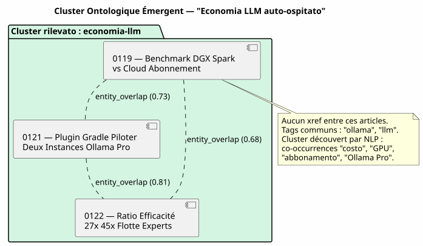

Il Knowledge Graph come motore di raccomandazione: come ho ucciso gli « articoli correlati » cronologici
Publié le 12 May 2026
- La scena : Martedì 12 maggio, 17:30
- La Diagnosi: Tre Tipi di Relazioni che Nessun Template Vede
- La Soluzione : Un pipeline Gradle, non una chiamata LLM a caldo
- L’ontologia emergente: Quando gli articoli si raggruppano senza conoscersi
- Il Contratto DAG: Chi Importa Chi
- Cosa si guadagna (e cosa non si guadagna)
- Prospettive : Il Blog Come Knowledge Graph Pubblico
- Conclusione : Il sistema di file sa ciò che il modello ignora
- Riferimenti
Stai leggendo un articolo sull’integrazione di pgvector con LangChain4j. In fondo alla pagina, JBake ti suggerisce « Articoli correlati ». Clicchi. È un articolo su… la configurazione di Kitty Terminal. L’unico punto in comune tra i due? Sono stati pubblicati da meno di quindici giorni di distanza. Non è una raccomandazione. È un calendario travestito da editoriale.
La scena : Martedì 12 maggio, 17:30
Sto rileggendo uno dei miei articoli — quello sul Knowledge Graph come strumento di comprensione della codebase Il contenuto è denso : nodi, archi, comunità, PlantUML, onboarding. Un articolo tecnica di 15 minuti di lettura che mobilizza`graphify-gradle`, plantuml-gradle, e i concetti di topologia di grafo.
Alla fine della pagina, gli « Articoli correlati » mi propongono :
-
Un articolo su Firebase Contact Form (0113)
-
Un articolo sul meccanismo Eager/Lazy (0108)
-
Un articolo sulla migrazione Gradle script → plugin (0102)
-
Un articolo sul cumulo di abbonamenti Ollama Pro (0120)
Tre di questi quattro articoli non hanno alcun rapporto con il Knowledge Graph. Sono lì perché sono gli ultimi pubblicati — vicinanza temporale, non vicinato semantico
Sto guardando il template`post.thyme`:
<!-- Articles connexes (liens internes SEO) -->
<th:block th:each="post,postStat : ${published_posts}">
<th:block th:if="${!post.uri.equals(content.uri) and postStat.index lt 4}">
...
</th:block>
</th:block>`published_posts`è una lista cronologica.`postStat.index lt 4`prende le i primi quattro che non sono il post corrente. È tutto. Nessuna logica di similarità. Nessuna nozione di contenuto. Solo un ciclo`for`travestita da raccomandazione.
|
Non è un bug di JBake. È il comportamento predefinito di tutto generatore di sito statico : l’elenco dei post è piatto e ordinato per data. Il modello fa quello che può con quello che ha. |
Ma non è una ragione per accettarlo.
La Diagnosi: Tre Tipi di Relazioni che Nessun Template Vede
Il mio corpus di articoli — 23 post in 4 mesi — ha una struttura ricca che il template cronologico sovrascrive completamente :
-
Riferimenti espliciti : utilizzo`xref:`massivamente nei miei articoli.
L’articolo 0122 fa riferimento al 0106 (knowledge graph) e al 0116 (compartimentaggio) epistemico). Questi link sono del hard linking editoriale — ho ha deliberatamente deciso di collegare questi concetti.
-
Tag condivisi : ogni articolo ha`:jbake-tags:`. L’articolo su
Graphify + PlantUML (0105) ha`gradle, graphify, plantuml, knowledge-graph`. L’articolo sul Knowledge Graph (0106) ha knowledge-graph, graphify, plantuml. Tre tag in comune su sette — 43% di sovrapposizione.
-
Entità nominate co-occorrenti : « pgvector », « RAG », « embedding
appaiono insieme in quattro articoli diversi. « LangChain4j », </think> appaiono insieme in quattro articoli diversi. « LangChain4j », </think> appaiono insieme in quattro articoli diversi. « LangChain4j », Ollama », « plugin Gradle » in sei altri. Questi non sono tag dichiarati — sono dei patterns emergenti del corpus che solo un NLP può rilevare.
Oggi, il mio sito non utilizza nessuna di questi tre livelli. Utilizza lo strato zero : l’ordine di inserimento in una lista Java
La Soluzione : Un pipeline Gradle, non una chiamata LLM a caldo
La prima tentazione sarebbe quella di chiamare un LLM al momento del bake : « Per questo articolo, trova i tre articoli più simili nel corpus. Non lo fate.
|
Una chiamata LLM a ciascuno`./gradlew bake`costa tempo, denaro e introduce non determinismo nel tuo build. La risposta del LLM può cambiare tra due build senza che il contenuto sia cambiato. Il tuo CI diventa non riproducibile, i vostri test diventano flaky. |
La soluzione è deterministica: un pipeline Gradle che precalcola il grafo di similarità e lo memorizza in`graph.json`. Il template legge il risultato — mai avvia un calcolo.
L’architettura : Bakery Importa Graphify, Non Engine
È il punto di architettura più importante. La tentazione sarebbe di cablare la collaborazione in`engine/build.gradle.kts` : engine applique graphify per lo scan, bakery per il bake, e engine fa da ponte tra i due.
È un antipattern. Engine è un terminal consumatore — aplica dei plug-in, non implementa la logica di business. La regola è : L’onere della prova è sul plugin proprietario.
Il contratto DAG è rispettato : bakery (N2) importa graphify (N0), N2 > N0, Nessuna violazione. Il motore (N3) importa la panetteria (N2), N3 > N2, OK.
Motore non ha alcuna linea di codice che fa riferimento`graph.json`, relatedPosts, o qualsiasi altra nozione di similarità. Applica bakery, punto. La La collaborazione è interna a bakery.
Il Pipeline : Scan → Grafo → Modello
Ecco il pipeline completo in tre fasi
-
Scansione (graficare) :`graphify-plugin`scansiona il workspace. Nel suo
forma attuale, già rileva i`xref:`tra`.adoc`e i esponi in`graph.json`come degli edge di tipo`reference`.
Lo arricchiamo per il contenuto editoriale: * Analizza i metadati JBake (:jbake-tags:, :jbake-description:) di ogni`.adoc`del blog * Calcola le co-occorrenze dei tag → edges`tag_cooccurrence`con peso * Estrai le entità nominate dalle descrizioni tramite TF-IDF → archi`entity_overlap` * Inietti una sezione`blog_articles`nel`graph.json`esistente (No output)
// Extrait de l'enrichissement graphify pour le blog
fun enrichBlogSection(graphJson: File, blogDir: File): GraphJson {
val articles = blogDir.listFiles { f -> f.extension == "adoc" }
.map { parseJbakeMetadata(it) }
val nodes = articles.map { ArticleNode(it.slug, it.title, it.tags) }
val edges = mutableListOf<GraphEdge>()
// Couche 1 : xref (déjà fait par scanWorkspace)
// Couche 2 : co-occurrences de tags
for (a in articles) {
for (b in articles) {
if (a.slug == b.slug) continue
val common = a.tags.intersect(b.tags)
if (common.isNotEmpty()) {
edges.add(GraphEdge(
source = a.slug,
target = b.slug,
type = "tag_cooccurrence",
weight = common.size.toDouble() / (a.tags.size + b.tags.size)
))
}
}
}
return graphJson.copy(
blogArticles = BlogSection(nodes, edges)
)
}-
Bake (bakery) : al momento del`./gradlew bake`, `BakeryPlugin`letto
`graph.json`e risolve gli articoli correlati per ogni post. (No output)
// BakeryPlugin — résolution des articles connexes
fun resolveRelatedPosts(
currentSlug: String,
graph: GraphJson,
maxResults: Int = 4
): List<RelatedPost> {
val edges = graph.blogArticles.edges
.filter { it.source == currentSlug || it.target == currentSlug }
return edges
.sortedByDescending { it.weight }
.take(maxResults)
.map { edge ->
val relatedSlug = if (edge.source == currentSlug) edge.target else edge.source
graph.blogArticles.nodes.first { it.slug == relatedSlug }
}
}-
(No output)
post.thyme) : il modello JBake riceve ora una mappa
strutturata invece di una lista cronologica piatta
<!-- Articles connexes basés sur le Knowledge Graph -->
<th:block th:if="${relatedPosts != null and !relatedPosts.empty}">
<section class="mt-5 pt-4 border-top">
<h2 class="h4 mb-3">Articles connexes</h2>
<th:block th:each="related : ${relatedPosts}">
<div class="mb-2">
<a th:href="${content.rootpath} + ${related.uri}"
th:text="${related.title}" class="fw-semibold"></a>
<br/>
<small class="text-muted">
<th:block th:each="reason,iterStat : ${related.reasons}">
<span class="badge bg-light text-dark"
th:text="${reason}"></span>
</th:block>
</small>
</div>
</th:block>
</section>
</th:block>Il template è lo stesso — non sa da dove vengono i dati. Solo il contratto tra bakery e JBake è cambiato :`published_posts`(lista cronologico) diventa`relatedPosts`(mappa ponderata dal grafo).
|
Il badge « ragione » (es:`xref 0122`, |
Fallback cronologico
Si `graph.json`est assente (build locale senza scan preliminare, primo) distribuzione, CI che non ha ancora integrato lo scan graphify), il template deve degradarsi elegantemente:
fun resolveRelatedPosts(currentSlug: String, graph: GraphJson?): List<RelatedPost> {
if (graph != null && graph.blogArticles != null) {
return resolveFromGraph(currentSlug, graph)
}
// Fallback chronologique — même comportement qu'aujourd'hui
logger.warn("[bakery] graph.json absent — fallback chronologique")
return resolveFromChronology(currentSlug)
}Il comportamento predefinito è identico al comportamento corrente. Il motore di raccomandazione è un miglioramento progressivo — non un modifica di rottura.
L’ontologia emergente: Quando gli articoli si raggruppano senza conoscersi
Lo strato più interessante è il terzo: l’ontologia emergente. Articoli che non vengono citati, che non hanno gli stessi tag, ma chi parlano della stessa cosa senza rendersene conto.
Prendiamo un esempio concreto. Tre articoli del mio corpus :
-
0119 — Benchmark DGX Spark vs Abbonamento Cloud LLM
-
0121 — Plugin Gradle Pilotare due istanze Ollama Pro
-
0122 — Rapporto di efficienza 27x 45x Flotta di esperti IA
Questi tre articoli non hanno nessuno xref tra di loro. I loro tag non si si limitano al 20% (« ollama », « llm » comuni). Ma un NLP leggero sulle descrizioni rivela un cluster evidente: « costo », « abbonamento », cloud », « GPU », « API key », « Ollama Pro », « efficacia », « ratio
Formano un cluster ontologico: l’economia del LLM self-hosted vs cloud. Questo cluster non è dichiarato da nessuna parte. Esso emerge dal corpus.

Questo cluster ontologico diventa un edge composite in`graph.json`:
{
"source": "0119-benchmark-dgx-spark",
"target": "cluster:economie-llm",
"type": "entity_cluster",
"weight": 0.73,
"metadata": {
"clusterLabel": "Économie LLM Self-Hosted vs Cloud",
"commonEntities": ["coût", "GPU", "abonnement", "Ollama Pro", "ratio"],
"articlesInCluster": [
"0119-benchmark-dgx-spark",
"0121-ollama-pro-deux-instances",
"0122-ratio-efficacite-flotte-experts"
]
}
}Il NLP è volontariamente leggero — TF-IDF + cosine similarity sui descrizioni. Non c’è bisogno di BERT, non c’è bisogno di un modello linguistico Il corpus è composto da 23 articoli, la matrice di similarità sta in un file JSON di 50 KB.
|
La potenza del NLP non deriva dalla sofisticazione dell’algoritmo, ma del dimensione del corpus e del qualità delle descrizioni. Una `:jbake-description:`ben scritta di 150 caratteri contiene più di segnale per TF-IDF che un articolo intero di 3000 parole. |
Il Contratto DAG: Chi Importa Chi
È il punto in cui la disciplina architettonica paga. Il DAG N0→N3 definito in`engine/build.gradle.kts`dà una regola semplice: nessun progetto importa un progetto di livello superiore.
| Plugin consumatore | Plugin importato | Livello consumatore | Livello importato | Valido? |
|---|---|---|---|---|
bakery-gradle |
graphify-gradle |
N2 |
N0 |
✅ N2 > N0 — OK |
engine |
bakery-gradle |
N3 |
N2 |
✅ N3 > N2 — OK |
engine |
graphify-gradle |
N3 |
N0 |
✅ Tecnica OK, ma concettualmente falsa — la collaborazione è interna alla bakery |
Il motore applica la panetteria. La panetteria applica graphify. È tutto. Se un giorno voglio aggiungere il vector store codebase (N1) per la ricerca semantica cross-corpus, bakery lo importa anche. Il motore non cambia.
|
Il pattern è : il plugin N2 è l’hub delle sue dipendenze. Engine N3 non è un hub — è un terminale che applica gli hub. |
Cosa si guadagna (e cosa non si guadagna)
Il guadagno principale è editoriale, non tecnico
| Prima | Dopo |
|---|---|
Articoli correlati = 4 ultimi post |
Articoli correlati = top 4 per peso nel Knowledge Graph |
Lettore legge il RAG → raccomandazione Kitty Terminal |
Il lettore legge RAG → raccomandazione pgvector, chunking, vector store |
Zero trasparenza sul perché |
Distintivo`xref 0122`, |
JBake standard, zero sforzo, zero valore |
Pipeline Gradle deterministica, riproducibile, testabile |
Nessuna curva di apprendimento per il lettore |
Il lettore scopre la topologia del mio contenuto |
Ciò che non si guadagna:
-
Non è un « vero » motore di raccomandazione (nessun collaborativo
filtering, senza A/B testing, senza feedback loop)
-
La qualità dipende dalla ricchezza dei metadati JBake — se il tuo
le descrizioni sono vuote, TF-IDF non vede nulla
-
Il NLP è offline — i nuovi articoli sono clusterizzati solo al
prossimo scan (è buono : il build rimane deterministico)
Prospettive : Il Blog Come Knowledge Graph Pubblico
Questa funzionalità apre una prospettiva più ampia: e se`cheroliv.com` diventava lui stesso un knowledge graph navigabile ?
Gli articoli sono nodi. I tag sono comunità. I xref sono degli spigoli. Il lettore non legge più un articolo isolato — si muove in un grafo della conoscenza di cui l’articolo corrente è il punto di ingresso.
Immaginate una home page che non mostra l’elenco cronologico degli ultimi post, ma una mappa del corpus : cluster ontologici, articoli pivot (quelli con il maggior numero di archi), percorsi di lettura consigliati « Se ti è piaciuto l’articolo su Graphify, leggi poi quello sul Knowledge Graph come strumento di comprensione )
Non è più un blog. È un atlas semantico.
E non è fantascienza. Il`graph.json`esiste già. Gli manca solo l’interfaccia di navigazione.
Conclusione : Il sistema di file sa ciò che il modello ignora
Ciò che ho progettato martedì sera, è la sostituzione di una euristica pigra (l’ordine cronologico) mediante una rappresentazione fedele della struttura del mio corpus (il Knowledge Graph)
Il template`post.thyme`Non cambia. Ciò che cambia, è ciò che si gli dà da mangiare. Prima : una lista Java ordinata per`date`. Dopo : un grafo pesato derivato da tre livelli di analisi — xrefs, co-occorrenze di tags, e ontologia emergente per NLP.
Il ciclo è chiuso. graphify scansiona il workspace. Bakery legge il grafico e nutre il modello. Il lettore vede delle raccomandazioni pertinenti. E engine — il maestro d’orchestra — non sa nemmeno che Tutto questo esiste.
Questa è la buona architettura. Ogni plugin fa una cosa. E il terminale del consumatore non ha bisogno di sapere come.
Riferimenti
-
Articolo 0105 — Integrazione di Graphify in un flusso di lavoro Gradle
-
Articolo 0106 — Il Knowledge Graph come strumento di comprensione
-
Articolo 0121 — Plugin Gradle Pilotare Due Istanze Ollama Pro
-
Articolo 0122 — 27× a 45× più efficace : flotta di esperti IA